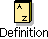

The <<AttributeDeclOpt>> means that you can declare attributes here. The program needs two integers: 'min' and 'max'. Click <<AttributeDeclOpt>> and type 'min,max: @integer'. Choose 'Edit->Parse Text or press ctrl-space to leave text editing mode.
The <<ImpOpt>> means that you can type imperatives here. We need to initialize 'min' and 'max', so click <<ImpOpt>> and type 'maxint->min'; minint->max. Leave text editing mode.
Now we need a loop. Mark 'minint->max' by holding down the mouse button from the middle of 'minint' to the middle of 'max'.
Now we return to 'minmax'. Click the Back button in the toolbar (or right-click and choose 'back' or press ctrl-b). Go back until the 'minmax'-program is displayed.
Whenever you find '(*)' in a program, it means the program contains a comment at that point. If you double-click the asterisk, the comment is displayed. Duoble-click again, and the comment is hidden. You can also use ctrl-d or the Definition button  in the toolbar.
in the toolbar.
If you find that too much code is being displayed and you would like an overview of the program you can press ctrl-o. This hides all the details. Double-click to get more details (or mark and press ctrl-d or click the Definition button  in the toolbar)
in the toolbar)
Load the file 'syntaxedit.bet'
![[4kb 448x142 PNG]](images/image036.png "[4kb 448x142 PNG]")
![[4kb 444x137 PNG]](images/image038.png "[4kb 444x137 PNG]")
![[4kb 460x176 PNG]](images/image041.png "[4kb 460x176 PNG]")
![[4kb 456x172 PNG]](images/image043.png "[4kb 456x172 PNG]")
Try marking different chunks of code and observe what is being selected. For example, try marking the following:
![[4kb 385x132 PNG]](images/image045.png "[4kb 385x132 PNG]")
![[8kb 405x326 PNG]](images/image047.png "[8kb 405x326 PNG]")
![[4kb 379x239 PNG]](images/image049.png "[4kb 379x239 PNG]")
![[7kb 392x433 PNG]](images/image051.png "[7kb 392x433 PNG]")
| Command | Keyboard shortcut |
| cut copy paste undo redo | ctrl-x ctrl-c ctrl-v ctrl-z ctrl-y |
Now we want to move the Person pattern down to aPerson: @person:
![[9kb 20%x444 PNG]](images/image053.png "[9kb 20%x444 PNG]")
![[9kb 20%x444 PNG]](images/image055.png "[9kb 20%x444 PNG]")
![[9kb 20%x444 PNG]](images/image057.png "[9kb 20%x444 PNG]")
![[9kb 20%x444 PNG]](images/image059.png "[9kb 20%x444 PNG]")
![[9kb 20%x444 PNG]](images/image061.png "[9kb 20%x444 PNG]") Now try undoing it all using ctrl-z.
Now try undoing it all using ctrl-z.
Notice that the Person pattern could have been thousands of lines of code, and it would still be very simple to move it around or copy it.
You can apply this to all sorts of other code fragments: imperatives, descriptors, do-parts, enter-parts, exit-parts, variabels, superpattern-prefixes. But it takes a little practice to be able to use it efficiently.
While viewing 'loops' choose SLOTs->Create Implementation File... and type "loopsbody". Now you have created a new file 'loopsbody' whose ORIGIN is 'loops' (symbolized by a double up-arrow  ). Conversely, 'loops' now has BODY 'loopsbody' (symbolized by a down arrow
). Conversely, 'loops' now has BODY 'loopsbody' (symbolized by a down arrow  ).
).
Go back to 'loops' by double-clicking  'loops' in the Projects window.
'loops' in the Projects window.
Mark the do-part of 'upTo' (press and hold the mouse button from the middle of 'do' to somewhere in the do-part).
![[7kb 536x405 PNG]](images/image073.png "[7kb 536x405 PNG]")
Choose SLOTs->Make DoPart SLOT, and call it "upToImplementation". Now the implementation of 'upTo' is automatically moved down into 'loopsbody'. Double-click <<SLOT upToImplementation: DoPart>> which takes you directly to the code in 'loopsbody' (or click the Definiton button  in the toolbar or eller press ctrl-d).
in the toolbar or eller press ctrl-d).
The Mjolner tool keeps track of your "current implementation file" at all times. This is the file into which the implementaion is moved when you choose SLOTs->Make DoPart SLOT. When you use SLOTs->Create Implementation File... to create a new file, that file becomes the "current implementation file". If you wish to change it, use the SLOTs menu.
Move the do-parts of 'downTo' and 'stepTo' down into 'loopsbody' as well. This can be done in one step by selecting both 'downTo' and 'stepTo' and choosing SLOTs->Make DoPart SLOT.
![[17kb 242x273 GIF]](images/image079.gif "[17kb 242x273 GIF]")
Now the tool searches through the chain of ORIGINs (adhering to the rules for doing so) looking for a matching SLOT. It ends up finding such a SLOT in 'loops'.
![[7kb 436x367 PNG]](images/image080.png "[7kb 436x367 PNG]")
Three patterns are defined in 'loops': 'upTo', 'downTo' and 'stepTo'. To be precise, they are defined in a 'lib:attributes' fragment form. as can be seen in the upper right corner of the tool. But which slot will this fragment form be inserted into, i.e. where is the SLOT corresponding to 'lib:attributes'? Find out the same way as above. Of course, the matching SLOT is located in 'betaenv'.
Load the file 'syntaxedit.bet'.
Compile  and run
and run  the program. It contains an error: 'Reference is none'.
Click the Debug button
the program. It contains an error: 'Reference is none'.
Click the Debug button  in the toolbar or right click in the code and choose Compile/Run->Debug 'syntaxedit'. Now a debugging window pops up.
in the toolbar or right click in the code and choose Compile/Run->Debug 'syntaxedit'. Now a debugging window pops up.
It is that easy to find errors like "Reference is none"!
Click "Go" in the debugging window. Now the program runs for a little while and then stops at the break point. CLick the Object button in the debugging window. This displays the active object, i.e. the object whose do-part is currently being executed. Here, the active object is of course the entire program.
You can see that the object has a 'aPerson' component which is an instance of the 'program.Person' pattern. But we already knew that. Now double click that line. Double click 'Name', and double click 'T'. You can see that the person is called "Santa Claus".
In this manner the object structure can be observed at runtime. Sometimes this is preferable to inserting debug-printlines. Now click the break point >>1>> and right click. Choose "Erase Break". Choose "Rerun" either from the right click menu or the new window. Now the program is ready to start over.
| Operation | Keys | Mouse/Button | Description | Menu item |
|---|---|---|---|---|
| Re-prettyprint | ctrl-p | Redraws the code if something has gone awry | View -> Reprettyprint | |
| Overview | ctrl-o | Abstract the code around the current selection | View -> Overview | |
| Detail Show definition Show code | ctrl-d | Double click  | This command has a number of different meanings depending on the current selection. Show more details around the current selection, find the definition of a name, open or close a comment | View -> Detail View -> Follow Semantic Link View->Follow Link to SLOT |
| Abstract | ctrl-k | Abstract the current selection | View -> Abstract | |
| To slot | F3 | | Search through the chain of ORIGINs looking for a SLOT matching the fragment form | View-> Follow Link to SLOT |
| Back | ctrl-b | | Go back to where you were before pressing e.g. Show Definition | History->Back |
| Forward | ctrl-f | | The oppposite of Back | History->Forward |
| Append empty code | ctrl-a Enter | Append "empty code" to the current selection | Edit->Insert After | |
| Prepend empty code | ctrl-u | Prepend "empty code" to the current selection | Edit -> Insert Before | |
| Check current | F4 | Check the current code for errors | Compile/Run->Check Current | |
| Check program | ctrl-F4 | Re-check the program that was last checked | Compile/Run->Check Program | |
| Compile current | F5 | Compile the current code and (if it is a program) produce an executable file | Compile/Run->Compile Current | |
| Compile program | Ctrl-F5 | | Compile and create executable for the most recently selected program | Compile/Run->Compile Program |
| Run program | F6 | Run the most recently selected program (if it has been compiled) | Compile/Run->Run Program | |
| Recompile and run | Shift-F5 | Compile and run the most recently selected program | Compile/Run->Recompile and Run | |
| Debug the program | F7 | Debug the most recently selected program (if it has been compiled) | Compile/Run->Debug Program |
| Command | Keyboard shortcut |
|---|---|
| cut copy paste undo redo | ctrl-x ctrl-c ctrl-v ctrl-z ctrl-y |
| Command | Keys | Mouse | Description | Menu item |
| Enter text editing mode | ctrl-t, ctrl-space | Enter text editing mode for the current selection | Edit->Edit Text | |
| Leave text editing mode | ctrl-t, sctrl-space | click outside selection | Re-interpret the edited chunk of code. The code must be syntactically correct | Edit->Parse Text |
| Cancel Text editing | escape | Discards all changes to the edited chunk of code | Edit->Cancel Textediting |
| Mjolner Tool Workshop | © 2001 Mjølner Informatics |
[Modified: Tuesday May 22nd 2001 at 15:04]
|